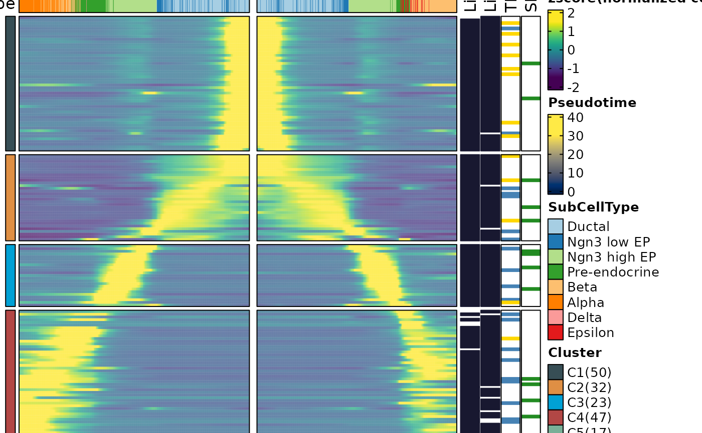
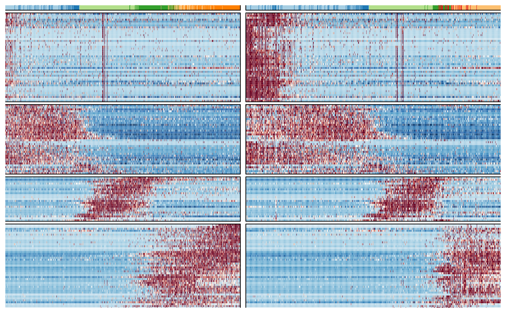
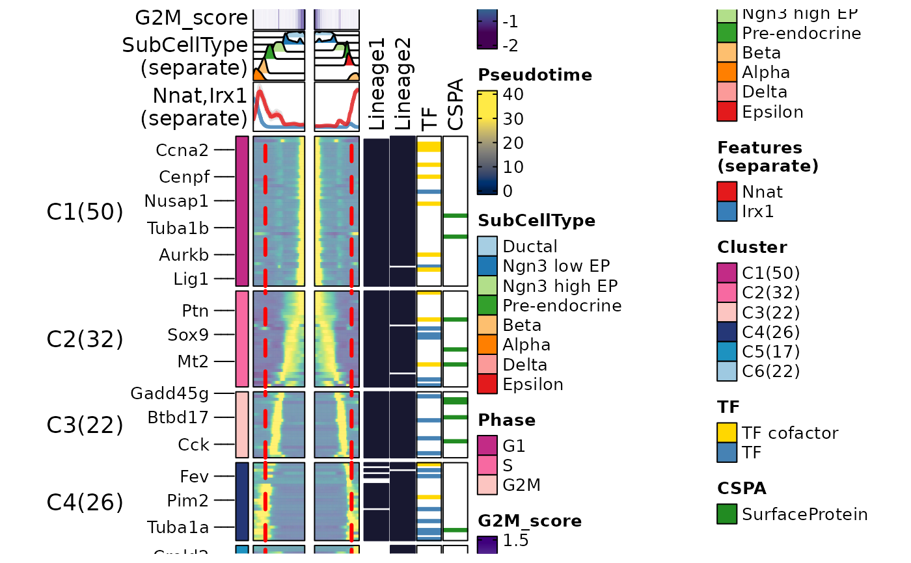
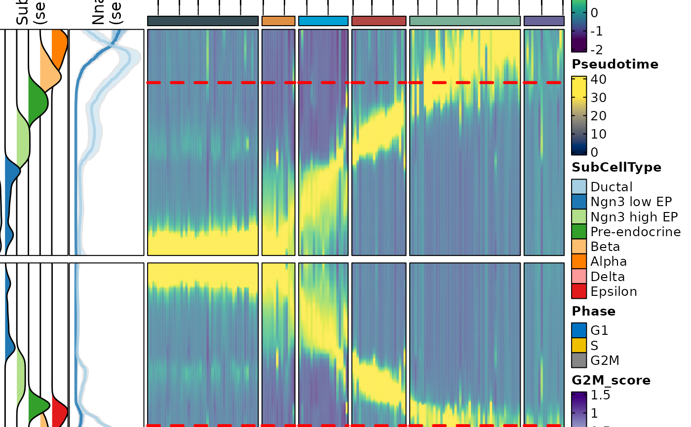
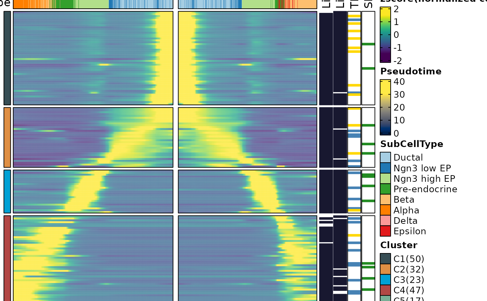
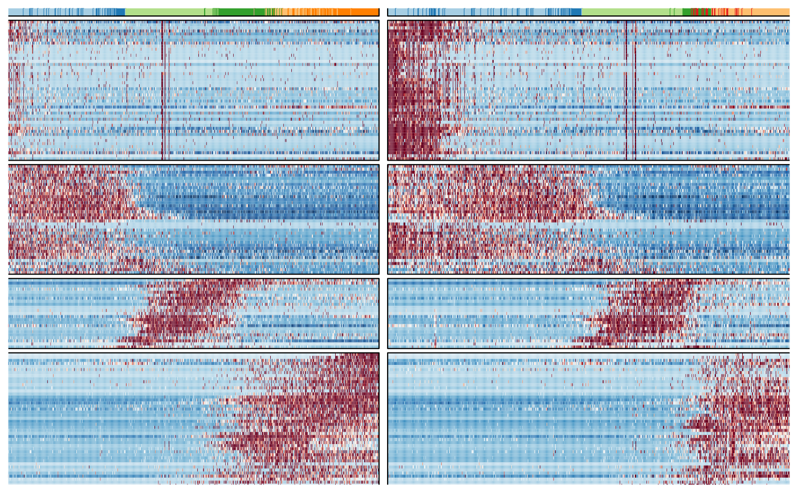
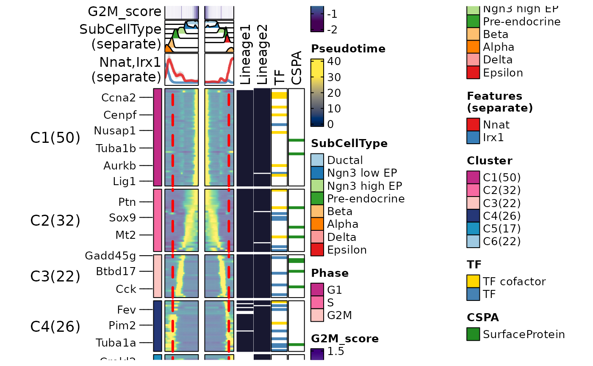
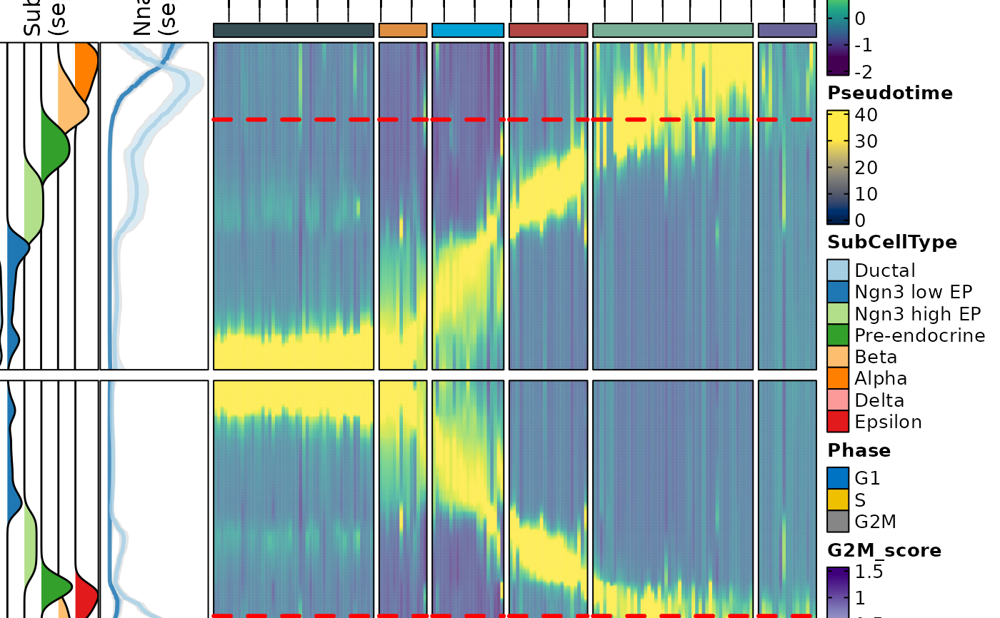

Heatmap plot for dynamic features along lineages
Usage
DynamicHeatmap(
srt,
lineages,
features = NULL,
use_fitted = FALSE,
border = TRUE,
flip = FALSE,
min_expcells = 20,
r.sq = 0.2,
dev.expl = 0.2,
padjust = 0.05,
num_intersections = NULL,
cell_density = 1,
cell_bins = 100,
order_by = c("peaktime", "valleytime"),
slot = "counts",
assay = NULL,
exp_method = c("zscore", "raw", "fc", "log2fc", "log1p"),
exp_legend_title = NULL,
limits = NULL,
lib_normalize = identical(slot, "counts"),
libsize = NULL,
family = NULL,
cluster_features_by = NULL,
cluster_rows = FALSE,
cluster_row_slices = FALSE,
cluster_columns = FALSE,
cluster_column_slices = FALSE,
show_row_names = FALSE,
show_column_names = FALSE,
row_names_side = ifelse(flip, "left", "right"),
column_names_side = ifelse(flip, "bottom", "top"),
row_names_rot = 0,
column_names_rot = 90,
row_title = NULL,
column_title = NULL,
row_title_side = "left",
column_title_side = "top",
row_title_rot = 0,
column_title_rot = ifelse(flip, 90, 0),
feature_split = NULL,
feature_split_by = NULL,
n_split = NULL,
split_order = NULL,
split_method = c("mfuzz", "kmeans", "kmeans-peaktime", "hclust", "hclust-peaktime"),
decreasing = FALSE,
fuzzification = NULL,
anno_terms = FALSE,
anno_keys = FALSE,
anno_features = FALSE,
terms_width = unit(4, "in"),
terms_fontsize = 8,
keys_width = unit(2, "in"),
keys_fontsize = c(6, 10),
features_width = unit(2, "in"),
features_fontsize = c(6, 10),
IDtype = "symbol",
species = "Homo_sapiens",
db_update = FALSE,
db_version = "latest",
db_combine = FALSE,
convert_species = FALSE,
Ensembl_version = 103,
mirror = NULL,
db = "GO_BP",
TERM2GENE = NULL,
TERM2NAME = NULL,
minGSSize = 10,
maxGSSize = 500,
GO_simplify = FALSE,
GO_simplify_cutoff = "p.adjust < 0.05",
simplify_method = "Wang",
simplify_similarityCutoff = 0.7,
pvalueCutoff = NULL,
padjustCutoff = 0.05,
topTerm = 5,
show_termid = FALSE,
topWord = 20,
words_excluded = NULL,
nlabel = 20,
features_label = NULL,
label_size = 10,
label_color = "black",
pseudotime_label = NULL,
pseudotime_label_color = "black",
pseudotime_label_linetype = 2,
pseudotime_label_linewidth = 3,
heatmap_palette = "viridis",
heatmap_palcolor = NULL,
pseudotime_palette = "cividis",
pseudotime_palcolor = NULL,
feature_split_palette = "simspec",
feature_split_palcolor = NULL,
cell_annotation = NULL,
cell_annotation_palette = "Paired",
cell_annotation_palcolor = NULL,
cell_annotation_params = list(),
feature_annotation = NULL,
feature_annotation_palette = "Dark2",
feature_annotation_palcolor = NULL,
feature_annotation_params = list(),
separate_annotation = NULL,
separate_annotation_palette = "Paired",
separate_annotation_palcolor = NULL,
separate_annotation_params = if (flip) list(width = grid::unit(2, "cm")) else
list(height = grid::unit(2, "cm")),
reverse_ht = NULL,
use_raster = NULL,
raster_device = "png",
raster_by_magick = FALSE,
height = NULL,
width = NULL,
units = "inch",
seed = 11,
ht_params = list()
)Arguments
- srt
A Seurat object.
- lineages
A character vector specifying the lineages to plot.
- features
A character vector specifying the features to plot. By default, this parameter is set to NULL, and the dynamic features will be determined by the parameters
min_expcells,r.sq,dev.expl,padjustandnum_intersections.- use_fitted
A logical indicating whether to use fitted values. Default is FALSE.
- border
A logical indicating whether to add a border to the heatmap. Default is TRUE.
- flip
A logical indicating whether to flip the heatmap. Default is FALSE.
- min_expcells
A numeric value specifying the minimum number of expected cells. Default is 20.
- r.sq
A numeric value specifying the R-squared threshold. Default is 0.2.
- dev.expl
A numeric value specifying the deviance explained threshold. Default is 0.2.
- padjust
A numeric value specifying the p-value adjustment threshold. Default is 0.05.
- num_intersections
This parameter is a numeric vector used to determine the number of intersections among lineages. It helps in selecting which dynamic features will be used. By default, when this parameter is set to NULL, all dynamic features that pass the specified threshold will be used for each lineage.
- cell_density
A numeric value is used to define the cell density within each cell bin. By default, this parameter is set to 1, which means that all cells will be included within each cell bin.
- cell_bins
A numeric value specifying the number of cell bins. Default is 100.
- order_by
A character vector specifying the order of the heatmap. Default is "peaktime".
- slot
A character vector specifying the slot in the Seurat object to use. Default is "counts".
- assay
A character vector specifying the assay in the Seurat object to use. Default is NULL.
- exp_method
A character vector specifying the method for calculating expression values. Default is "zscore" with options "zscore", "raw", "fc", "log2fc", "log1p".
- exp_legend_title
A character vector specifying the title for the legend of expression value. Default is NULL.
- limits
A two-length numeric vector specifying the limits for the color scale. Default is NULL.
- lib_normalize
A logical value indicating whether to normalize the data by library size.
- libsize
A numeric vector specifying the library size for each cell. Default is NULL.
- family
A character specifying the model used to calculate the dynamic features if needed. By default, this parameter is set to NULL, and the appropriate family will be automatically determined.
- cluster_features_by
A character vector specifying which lineage to use when clustering features. By default, this parameter is set to NULL, which means that all lineages will be used.
- cluster_rows
A logical value indicating whether to cluster rows in the heatmap. Default is FALSE.
- cluster_row_slices
A logical value indicating whether to cluster row slices in the heatmap. Default is FALSE.
- cluster_columns
A logical value indicating whether to cluster columns in the heatmap. Default is FALSE.
- cluster_column_slices
A logical value indicating whether to cluster column slices in the heatmap. Default is FALSE.
- show_row_names
A logical value indicating whether to show row names in the heatmap. Default is FALSE.
- show_column_names
A logical value indicating whether to show column names in the heatmap. Default is FALSE.
- row_names_side
A character vector specifying the side to place row names.
- column_names_side
A character vector specifying the side to place column names.
- row_names_rot
A numeric value specifying the rotation angle for row names. Default is 0.
- column_names_rot
A numeric value specifying the rotation angle for column names. Default is 90.
- row_title
A character vector specifying the title for rows. Default is NULL.
- column_title
A character vector specifying the title for columns. Default is NULL.
- row_title_side
A character vector specifying the side to place row title. Default is "left".
- column_title_side
A character vector specifying the side to place column title. Default is "top".
- row_title_rot
A numeric value specifying the rotation angle for row title. Default is 0.
- column_title_rot
A numeric value specifying the rotation angle for column title.
- feature_split
A factor specifying how to split the features. Default is NULL.
- feature_split_by
A character vector specifying which group.by to use when splitting features (into n_split feature clusters). Default is NULL.
- n_split
An integer specifying the number of feature splits (feature clusters) to create. Default is NULL.
- split_order
A numeric vector specifying the order of splits. Default is NULL.
- split_method
A character vector specifying the method for splitting features. Default is "kmeans" with options "kmeans", "hclust", "mfuzz").
- decreasing
A logical value indicating whether to sort feature splits in decreasing order. Default is FALSE.
- fuzzification
A numeric value specifying the fuzzification coefficient. Default is NULL.
- anno_terms
A logical value indicating whether to include term annotations. Default is FALSE.
- anno_keys
A logical value indicating whether to include key annotations. Default is FALSE.
- anno_features
A logical value indicating whether to include feature annotations. Default is FALSE.
- terms_width
A unit specifying the width of term annotations. Default is unit(4, "in").
- terms_fontsize
A numeric vector specifying the font size(s) for term annotations. Default is 8.
- keys_width
A unit specifying the width of key annotations. Default is unit(2, "in").
- keys_fontsize
A two-length numeric vector specifying the minimum and maximum font size(s) for key annotations. Default is c(6, 10).
- features_width
A unit specifying the width of feature annotations. Default is unit(2, "in").
- features_fontsize
A two-length numeric vector specifying the minimum and maximum font size(s) for feature annotations. Default is c(6, 10).
- IDtype
A character vector specifying the type of IDs for features. Default is "symbol".
- species
A character vector specifying the species for features. Default is "Homo_sapiens".
- db_update
A logical value indicating whether to update the database. Default is FALSE.
- db_version
A character vector specifying the version of the database. Default is "latest".
- db_combine
A logical value indicating whether to use a combined database. Default is FALSE.
- convert_species
A logical value indicating whether to use a species-converted database if annotation is missing for
species. Default is FALSE.- Ensembl_version
An integer specifying the Ensembl version. Default is 103.
- mirror
A character vector specifying the mirror for the Ensembl database. Default is NULL.
- db
A character vector specifying the database to use. Default is "GO_BP".
- TERM2GENE
A data.frame specifying the TERM2GENE mapping for the database. Default is NULL.
- TERM2NAME
A data.frame specifying the TERM2NAME mapping for the database. Default is NULL.
- minGSSize
An integer specifying the minimum gene set size for the database. Default is 10.
- maxGSSize
An integer specifying the maximum gene set size for the database. Default is 500.
- GO_simplify
A logical value indicating whether to simplify gene ontology terms. Default is FALSE.
- GO_simplify_cutoff
A character vector specifying the cutoff for GO simplification. Default is "p.adjust < 0.05".
- simplify_method
A character vector specifying the method for GO simplification. Default is "Wang".
- simplify_similarityCutoff
A numeric value specifying the similarity cutoff for GO simplification. Default is 0.7.
- pvalueCutoff
A numeric vector specifying the p-value cutoff(s) for significance. Default is NULL.
- padjustCutoff
A numeric value specifying the adjusted p-value cutoff for significance. Default is 0.05.
- topTerm
An integer specifying the number of top terms to include. Default is 5.
- show_termid
A logical value indicating whether to show term IDs. Default is FALSE.
- topWord
An integer specifying the number of top words to include. Default is 20.
- words_excluded
A character vector specifying the words to exclude. Default is NULL.
- nlabel
An integer specifying the number of labels to include. Default is 0.
- features_label
A character vector specifying the features to label. Default is NULL.
- label_size
A numeric value specifying the size of labels. Default is 10.
- label_color
A character vector specifying the color of labels. Default is "black".
- pseudotime_label
A numeric vector specifying the pseudotime label. Default is NULL.
- pseudotime_label_color
A character string specifying the pseudotime label color. Default is "black".
- pseudotime_label_linetype
A numeric value specifying the pseudotime label line type. Default is 2.
- pseudotime_label_linewidth
A numeric value specifying the pseudotime label line width. Default is 3.
- heatmap_palette
A character vector specifying the palette to use for the heatmap. Default is "RdBu".
- heatmap_palcolor
A character vector specifying the heatmap color to use. Default is NULL.
- pseudotime_palette
A character vector specifying the color palette to use for pseudotime.
- pseudotime_palcolor
A list specifying the colors to use for the pseudotime in the heatmap.
- feature_split_palette
A character vector specifying the palette to use for feature splits. Default is "simspec".
- feature_split_palcolor
A character vector specifying the feature split color to use. Default is NULL.
- cell_annotation
A character vector specifying the cell annotation(s) to include. Default is NULL.
- cell_annotation_palette
A character vector specifying the palette to use for cell annotations. The length of the vector should match the number of cell_annotation. Default is "Paired".
- cell_annotation_palcolor
A list of character vector specifying the cell annotation color(s) to use. The length of the list should match the number of cell_annotation. Default is NULL.
- cell_annotation_params
A list specifying additional parameters for cell annotations. Default is a list with width = grid::unit(1, "cm") if flip is TRUE, else a list with height = grid::unit(1, "cm").
- feature_annotation
A character vector specifying the feature annotation(s) to include. Default is NULL.
- feature_annotation_palette
A character vector specifying the palette to use for feature annotations. The length of the vector should match the number of feature_annotation. Default is "Dark2".
- feature_annotation_palcolor
A list of character vector specifying the feature annotation color to use. The length of the list should match the number of feature_annotation. Default is NULL.
- feature_annotation_params
A list specifying additional parameters for feature annotations. Default is an empty list.
- separate_annotation
A character vector of names of annotations to be displayed in separate annotation blocks. Each name should match a column name in the metadata of the Seurat object.
- separate_annotation_palette
A character vector specifying the color palette to use for separate annotations.
- separate_annotation_palcolor
A list specifying the colors to use for each level of the separate annotations.
- separate_annotation_params
A list of other parameters to be passed to the HeatmapAnnotation function when creating the separate annotation blocks.
- reverse_ht
A logical indicating whether to reverse the heatmap. Default is NULL.
- use_raster
A logical value indicating whether to use a raster device for plotting. Default is NULL.
- raster_device
A character vector specifying the raster device to use. Default is "png".
- raster_by_magick
A logical value indicating whether to use the 'magick' package for raster. Default is FALSE.
- height
A numeric vector specifying the height(s) of the heatmap body. Default is NULL.
- width
A numeric vector specifying the width(s) of the heatmap body. Default is NULL.
- units
A character vector specifying the units for the height and width. Default is "inch".
- seed
An integer specifying the random seed. Default is 11.
- ht_params
A list specifying additional parameters passed to the ComplexHeatmap::Heatmap function. Default is an empty list.
Examples
data("pancreas_sub")
pancreas_sub <- RunSlingshot(pancreas_sub, group.by = "SubCellType", reduction = "UMAP")
#> Warning: Removed 8 rows containing missing values (`geom_path()`).
#> Warning: Removed 8 rows containing missing values (`geom_path()`).
 pancreas_sub <- RunDynamicFeatures(pancreas_sub, lineages = c("Lineage1", "Lineage2"), n_candidates = 200)
#> [2023-10-30 09:42:02.425622] Start RunDynamicFeatures
#> Workers: 1
#> Number of candidate features(union): 225
#> Calculate dynamic features for Lineage1...
#>
|
| | 0%
|
|==============================================================================================================| 100%
#>
#> Calculate dynamic features for Lineage2...
#>
|
| | 0%
|
|==============================================================================================================| 100%
#>
#> [2023-10-30 09:42:27.732241] RunDynamicFeatures done
#> Elapsed time:25.31 secs
ht1 <- DynamicHeatmap(
srt = pancreas_sub,
lineages = "Lineage1",
n_split = 5,
split_method = "kmeans-peaktime",
cell_annotation = "SubCellType"
)
#> 151 features from Lineage1 passed the threshold (exp_ncells>20 & r.sq>0.2 & dev.expl>0.2 & padjust<0.05):
#> Gcg,Iapp,Pyy,Chgb,Slc38a5,Rbp4,Lrpprc,Cck,2810417H13Rik,Chga...
#> 'magick' package is suggested to install to give better rasterization.
#>
#> Set `ht_opt$message = FALSE` to turn off this message.
#> The size of the heatmap is fixed because certain elements are not scalable.
#>
#> The width and height of the heatmap are determined by the size of the current viewport.
#>
#> If you want to have more control over the size, you can manually set the parameters 'width' and 'height'.
ht1$plot
pancreas_sub <- RunDynamicFeatures(pancreas_sub, lineages = c("Lineage1", "Lineage2"), n_candidates = 200)
#> [2023-10-30 09:42:02.425622] Start RunDynamicFeatures
#> Workers: 1
#> Number of candidate features(union): 225
#> Calculate dynamic features for Lineage1...
#>
|
| | 0%
|
|==============================================================================================================| 100%
#>
#> Calculate dynamic features for Lineage2...
#>
|
| | 0%
|
|==============================================================================================================| 100%
#>
#> [2023-10-30 09:42:27.732241] RunDynamicFeatures done
#> Elapsed time:25.31 secs
ht1 <- DynamicHeatmap(
srt = pancreas_sub,
lineages = "Lineage1",
n_split = 5,
split_method = "kmeans-peaktime",
cell_annotation = "SubCellType"
)
#> 151 features from Lineage1 passed the threshold (exp_ncells>20 & r.sq>0.2 & dev.expl>0.2 & padjust<0.05):
#> Gcg,Iapp,Pyy,Chgb,Slc38a5,Rbp4,Lrpprc,Cck,2810417H13Rik,Chga...
#> 'magick' package is suggested to install to give better rasterization.
#>
#> Set `ht_opt$message = FALSE` to turn off this message.
#> The size of the heatmap is fixed because certain elements are not scalable.
#>
#> The width and height of the heatmap are determined by the size of the current viewport.
#>
#> If you want to have more control over the size, you can manually set the parameters 'width' and 'height'.
ht1$plot
 panel_fix(ht1$plot, raster = TRUE, dpi = 50)
panel_fix(ht1$plot, raster = TRUE, dpi = 50)
 ht2 <- DynamicHeatmap(
srt = pancreas_sub,
lineages = "Lineage1",
features = c("Sox9", "Neurod2", "Isl1", "Rbp4", "Pyy", "S_score", "G2M_score"),
cell_annotation = "SubCellType"
)
#> [2023-10-30 09:42:33.878917] Start RunDynamicFeatures
#> Workers: 1
#> Number of candidate features(union): 2
#> Warning: Negative values detected!
#> Warning: Negative values detected!
#> Calculate dynamic features for Lineage1...
#>
|
| | 0%
|
|==============================================================================================================| 100%
#>
#> [2023-10-30 09:42:35.502732] RunDynamicFeatures done
#> Elapsed time:1.62 secs
#> Some features were missing in at least one lineage:
#> Isl1,Neurod2,Pyy,Rbp4,Sox9...
#> 'magick' package is suggested to install to give better rasterization.
#>
#> Set `ht_opt$message = FALSE` to turn off this message.
ht2$plot
ht2 <- DynamicHeatmap(
srt = pancreas_sub,
lineages = "Lineage1",
features = c("Sox9", "Neurod2", "Isl1", "Rbp4", "Pyy", "S_score", "G2M_score"),
cell_annotation = "SubCellType"
)
#> [2023-10-30 09:42:33.878917] Start RunDynamicFeatures
#> Workers: 1
#> Number of candidate features(union): 2
#> Warning: Negative values detected!
#> Warning: Negative values detected!
#> Calculate dynamic features for Lineage1...
#>
|
| | 0%
|
|==============================================================================================================| 100%
#>
#> [2023-10-30 09:42:35.502732] RunDynamicFeatures done
#> Elapsed time:1.62 secs
#> Some features were missing in at least one lineage:
#> Isl1,Neurod2,Pyy,Rbp4,Sox9...
#> 'magick' package is suggested to install to give better rasterization.
#>
#> Set `ht_opt$message = FALSE` to turn off this message.
ht2$plot
 panel_fix(ht2$plot, height = 5, width = 5, raster = TRUE, dpi = 50)

ht3 <- DynamicHeatmap(
srt = pancreas_sub,
lineages = c("Lineage1", "Lineage2"),
n_split = 5,
split_method = "kmeans",
cluster_rows = TRUE,
cell_annotation = "SubCellType"
)
#> 169 features from Lineage1,Lineage2 passed the threshold (exp_ncells>20 & r.sq>0.2 & dev.expl>0.2 & padjust<0.05):
#> Gcg,Iapp,Pyy,Chgb,Slc38a5,Rbp4,Lrpprc,Cck,2810417H13Rik,Chga...
#> 'magick' package is suggested to install to give better rasterization.
#>
#> Set `ht_opt$message = FALSE` to turn off this message.
#> The size of the heatmap is fixed because certain elements are not scalable.
#>
#> The width and height of the heatmap are determined by the size of the current viewport.
#>
#> If you want to have more control over the size, you can manually set the parameters 'width' and 'height'.
ht3$plot

pancreas_sub <- AnnotateFeatures(pancreas_sub, species = "Mus_musculus", db = c("TF", "CSPA"))
#> Species: Mus_musculus
#> Loading cached db: TF version:AnimalTFDB4 nterm:2 created:2023-10-30 09:34:04.589855
#> Loading cached db: CSPA version:CSPA nterm:1 created:2023-10-30 09:34:08.354181
ht4 <- DynamicHeatmap(
srt = pancreas_sub,
lineages = c("Lineage1", "Lineage2"),
reverse_ht = "Lineage1",
use_fitted = TRUE,
n_split = 6,
split_method = "mfuzz",
heatmap_palette = "viridis",
cell_annotation = c("SubCellType", "Phase", "G2M_score"),
cell_annotation_palette = c("Paired", "simspec", "Purples"),
separate_annotation = list("SubCellType", c("Nnat", "Irx1")),
separate_annotation_palette = c("Paired", "Set1"),
separate_annotation_params = list(height = grid::unit(2, "cm")),
feature_annotation = c("TF", "CSPA"),
feature_annotation_palcolor = list(c("gold", "steelblue"), c("forestgreen")),
pseudotime_label = 25,
pseudotime_label_color = "red"
)
#> 169 features from Lineage1,Lineage2 passed the threshold (exp_ncells>20 & r.sq>0.2 & dev.expl>0.2 & padjust<0.05):
#> Gcg,Iapp,Pyy,Chgb,Slc38a5,Rbp4,Lrpprc,Cck,2810417H13Rik,Chga...
#> 'magick' package is suggested to install to give better rasterization.
#>
#> Set `ht_opt$message = FALSE` to turn off this message.
#> The size of the heatmap is fixed because certain elements are not scalable.
#>
#> The width and height of the heatmap are determined by the size of the current viewport.
#>
#> If you want to have more control over the size, you can manually set the parameters 'width' and 'height'.
#> Picking joint bandwidth of 20.1
#> Picking joint bandwidth of 18.6
#> Picking joint bandwidth of 20.1
#> Picking joint bandwidth of 18.6
ht4$plot

ht5 <- DynamicHeatmap(
srt = pancreas_sub,
lineages = c("Lineage1", "Lineage2"),
reverse_ht = "Lineage1",
use_fitted = TRUE,
n_split = 6,
split_method = "mfuzz",
heatmap_palette = "viridis",
cell_annotation = c("SubCellType", "Phase", "G2M_score"),
cell_annotation_palette = c("Paired", "simspec", "Purples"),
separate_annotation = list("SubCellType", c("Nnat", "Irx1")),
separate_annotation_palette = c("Paired", "Set1"),
separate_annotation_params = list(width = grid::unit(2, "cm")),
feature_annotation = c("TF", "CSPA"),
feature_annotation_palcolor = list(c("gold", "steelblue"), c("forestgreen")),
pseudotime_label = 25,
pseudotime_label_color = "red",
flip = TRUE, column_title_rot = 45
)
#> 169 features from Lineage1,Lineage2 passed the threshold (exp_ncells>20 & r.sq>0.2 & dev.expl>0.2 & padjust<0.05):
#> Gcg,Iapp,Pyy,Chgb,Slc38a5,Rbp4,Lrpprc,Cck,2810417H13Rik,Chga...
#> 'magick' package is suggested to install to give better rasterization.
#>
#> Set `ht_opt$message = FALSE` to turn off this message.
#> The size of the heatmap is fixed because certain elements are not scalable.
#>
#> The width and height of the heatmap are determined by the size of the current viewport.
#>
#> If you want to have more control over the size, you can manually set the parameters 'width' and 'height'.
#> Picking joint bandwidth of 20.1
#> Picking joint bandwidth of 18.6
#> Picking joint bandwidth of 20.1
#> Picking joint bandwidth of 18.6
ht5$plot

ht6 <- DynamicHeatmap(
srt = pancreas_sub,
lineages = c("Lineage1", "Lineage2"),
reverse_ht = "Lineage1",
cell_annotation = "SubCellType",
n_split = 5, split_method = "mfuzz",
species = "Mus_musculus", db = "GO_BP",
anno_terms = TRUE, anno_keys = TRUE, anno_features = TRUE
)
#> 169 features from Lineage1,Lineage2 passed the threshold (exp_ncells>20 & r.sq>0.2 & dev.expl>0.2 & padjust<0.05):
#> Gcg,Iapp,Pyy,Chgb,Slc38a5,Rbp4,Lrpprc,Cck,2810417H13Rik,Chga...
#> 'magick' package is suggested to install to give better rasterization.
#>
#> Set `ht_opt$message = FALSE` to turn off this message.
#> [2023-10-30 09:43:01.832747] Start Enrichment
#> Workers: 1
#> Species: Mus_musculus
#> Preparing database: GO_BP
#> Convert ID types for the database: GO_BP
#> Connect to the Ensembl archives...
#> Using the 103 version of biomart...
#> Connecting to the biomart...
#> Searching the dataset mmusculus ...
#> Connecting to the dataset mmusculus_gene_ensembl ...
#> Converting the geneIDs...
#> Error in collect(., Inf): Failed to collect lazy table.
#> Caused by error in `db_collect()`:
#> ! Arguments in `...` must be used.
#> ✖ Problematic argument:
#> • ..1 = Inf
#> ℹ Did you misspell an argument name?
ht6$plot
#> Error in eval(expr, envir, enclos): object 'ht6' not found
panel_fix(ht2$plot, height = 5, width = 5, raster = TRUE, dpi = 50)

ht3 <- DynamicHeatmap(
srt = pancreas_sub,
lineages = c("Lineage1", "Lineage2"),
n_split = 5,
split_method = "kmeans",
cluster_rows = TRUE,
cell_annotation = "SubCellType"
)
#> 169 features from Lineage1,Lineage2 passed the threshold (exp_ncells>20 & r.sq>0.2 & dev.expl>0.2 & padjust<0.05):
#> Gcg,Iapp,Pyy,Chgb,Slc38a5,Rbp4,Lrpprc,Cck,2810417H13Rik,Chga...
#> 'magick' package is suggested to install to give better rasterization.
#>
#> Set `ht_opt$message = FALSE` to turn off this message.
#> The size of the heatmap is fixed because certain elements are not scalable.
#>
#> The width and height of the heatmap are determined by the size of the current viewport.
#>
#> If you want to have more control over the size, you can manually set the parameters 'width' and 'height'.
ht3$plot

pancreas_sub <- AnnotateFeatures(pancreas_sub, species = "Mus_musculus", db = c("TF", "CSPA"))
#> Species: Mus_musculus
#> Loading cached db: TF version:AnimalTFDB4 nterm:2 created:2023-10-30 09:34:04.589855
#> Loading cached db: CSPA version:CSPA nterm:1 created:2023-10-30 09:34:08.354181
ht4 <- DynamicHeatmap(
srt = pancreas_sub,
lineages = c("Lineage1", "Lineage2"),
reverse_ht = "Lineage1",
use_fitted = TRUE,
n_split = 6,
split_method = "mfuzz",
heatmap_palette = "viridis",
cell_annotation = c("SubCellType", "Phase", "G2M_score"),
cell_annotation_palette = c("Paired", "simspec", "Purples"),
separate_annotation = list("SubCellType", c("Nnat", "Irx1")),
separate_annotation_palette = c("Paired", "Set1"),
separate_annotation_params = list(height = grid::unit(2, "cm")),
feature_annotation = c("TF", "CSPA"),
feature_annotation_palcolor = list(c("gold", "steelblue"), c("forestgreen")),
pseudotime_label = 25,
pseudotime_label_color = "red"
)
#> 169 features from Lineage1,Lineage2 passed the threshold (exp_ncells>20 & r.sq>0.2 & dev.expl>0.2 & padjust<0.05):
#> Gcg,Iapp,Pyy,Chgb,Slc38a5,Rbp4,Lrpprc,Cck,2810417H13Rik,Chga...
#> 'magick' package is suggested to install to give better rasterization.
#>
#> Set `ht_opt$message = FALSE` to turn off this message.
#> The size of the heatmap is fixed because certain elements are not scalable.
#>
#> The width and height of the heatmap are determined by the size of the current viewport.
#>
#> If you want to have more control over the size, you can manually set the parameters 'width' and 'height'.
#> Picking joint bandwidth of 20.1
#> Picking joint bandwidth of 18.6
#> Picking joint bandwidth of 20.1
#> Picking joint bandwidth of 18.6
ht4$plot

ht5 <- DynamicHeatmap(
srt = pancreas_sub,
lineages = c("Lineage1", "Lineage2"),
reverse_ht = "Lineage1",
use_fitted = TRUE,
n_split = 6,
split_method = "mfuzz",
heatmap_palette = "viridis",
cell_annotation = c("SubCellType", "Phase", "G2M_score"),
cell_annotation_palette = c("Paired", "simspec", "Purples"),
separate_annotation = list("SubCellType", c("Nnat", "Irx1")),
separate_annotation_palette = c("Paired", "Set1"),
separate_annotation_params = list(width = grid::unit(2, "cm")),
feature_annotation = c("TF", "CSPA"),
feature_annotation_palcolor = list(c("gold", "steelblue"), c("forestgreen")),
pseudotime_label = 25,
pseudotime_label_color = "red",
flip = TRUE, column_title_rot = 45
)
#> 169 features from Lineage1,Lineage2 passed the threshold (exp_ncells>20 & r.sq>0.2 & dev.expl>0.2 & padjust<0.05):
#> Gcg,Iapp,Pyy,Chgb,Slc38a5,Rbp4,Lrpprc,Cck,2810417H13Rik,Chga...
#> 'magick' package is suggested to install to give better rasterization.
#>
#> Set `ht_opt$message = FALSE` to turn off this message.
#> The size of the heatmap is fixed because certain elements are not scalable.
#>
#> The width and height of the heatmap are determined by the size of the current viewport.
#>
#> If you want to have more control over the size, you can manually set the parameters 'width' and 'height'.
#> Picking joint bandwidth of 20.1
#> Picking joint bandwidth of 18.6
#> Picking joint bandwidth of 20.1
#> Picking joint bandwidth of 18.6
ht5$plot

ht6 <- DynamicHeatmap(
srt = pancreas_sub,
lineages = c("Lineage1", "Lineage2"),
reverse_ht = "Lineage1",
cell_annotation = "SubCellType",
n_split = 5, split_method = "mfuzz",
species = "Mus_musculus", db = "GO_BP",
anno_terms = TRUE, anno_keys = TRUE, anno_features = TRUE
)
#> 169 features from Lineage1,Lineage2 passed the threshold (exp_ncells>20 & r.sq>0.2 & dev.expl>0.2 & padjust<0.05):
#> Gcg,Iapp,Pyy,Chgb,Slc38a5,Rbp4,Lrpprc,Cck,2810417H13Rik,Chga...
#> 'magick' package is suggested to install to give better rasterization.
#>
#> Set `ht_opt$message = FALSE` to turn off this message.
#> [2023-10-30 09:43:01.832747] Start Enrichment
#> Workers: 1
#> Species: Mus_musculus
#> Preparing database: GO_BP
#> Convert ID types for the database: GO_BP
#> Connect to the Ensembl archives...
#> Using the 103 version of biomart...
#> Connecting to the biomart...
#> Searching the dataset mmusculus ...
#> Connecting to the dataset mmusculus_gene_ensembl ...
#> Converting the geneIDs...
#> Error in collect(., Inf): Failed to collect lazy table.
#> Caused by error in `db_collect()`:
#> ! Arguments in `...` must be used.
#> ✖ Problematic argument:
#> • ..1 = Inf
#> ℹ Did you misspell an argument name?
ht6$plot
#> Error in eval(expr, envir, enclos): object 'ht6' not found